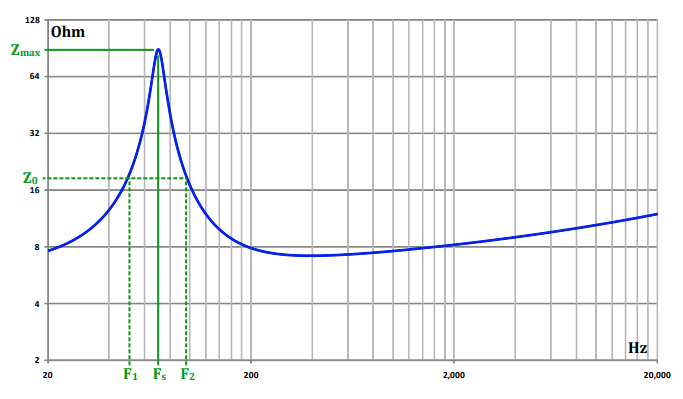
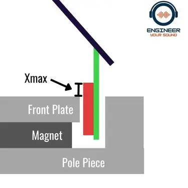
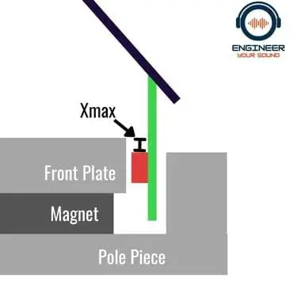

Or T/S Parameters
F
- driver resonance frequency any speaker will have a hard time to play any frequency below the
- The frequency when frequency response start to drop - frequency where the 3 decibel power drop occurs, less than this you will feel that the sound is quieter - box resonance frequency
Q
Q - Quantity factor, the magnification of resonance factor of any resonant device or circuit. A driver with a high Q is more resonant than one with a low Q.
Q can also be called as “damping” lower Q will have more damping (more damping is more clear more good things)
- the mechanical Q of the driver. (Spring from surround and spider)
- Higher drivers displaying a higher impedance peak
- the electrical Q of the driver. This causes by Back EMF (same as motor)
- the total Q of the driver at Fs.
Finding and

= impedance at find and in impedance curve ( and have difference meaning from )
Qms = Fs/(F2 - F1)*sqrt(Zmax/Re)
Qes = Qms/(Zmax/Re - 1)
Relation with other variables
ref. Measuring transducer Qms, Qes, Qts (wavecor.com)
- Compliance Higher (loose suspension) → yield a lower frequency Lower (stiffer suspension) → yield a higher frequency
- DC resistance (normally 30% less than impedance) Impedance, - AC resistance
- Magnetic force factor / motor strength ()
. Which is (the flux density) x (the length of the voice coil)
Or, actually
So,
Relative to other parameters
Dimensions
V
Vas - air volume equal equal to compliance of driver suspension (springiness of driver) = describe in volume
Vb - Net enclosure internal volume
- maximum distance that coin can travel without distortion (they said that travel of 115% Xmax will not introduce audible distortion)


In 5-7” speaker should be more than 3mm In 8-12” speaker should be more than 6mm
- maximum distance a speaker can travel without damaging the driver
= Distortion = Damage!!
Sd - effective area of the cone () more Sd = more bass less Sd = more spread high frequency
Mmd = moving mass (mass of Coil + Cone + spider/2 + surround/2) Mms = Mmd + mass of air in front of the cone
High Mmd → Low Low Mmd → High
SPL
units
Difference driver Impedance will effect unit
dB\;@\;2.83V/m\;@\;8\ohm &= \pm 0\;dB\;@\;W/m \\ dB\;@\;2.83V/m\;@\;6\ohm &= -1.3\;dB\;@\;W/m \\ dB\;@\;2.83V/m\;@\;4\ohm &= -3\;dB\;@\;W/m \\ dB\;@\;2.83V/m\;@\;2\ohm &= -6\;dB\;@\;W/m \\ \end{split}twice the power give +3 dB half the power give -3 dB one tenth the power give -10 dB
Ex
Max SPL
Perceived loudness
- 3 dB difference is difficult to hear
- 10 dB considered to be twice as loud
Efficiency
1 Watt of acoustic power = 112 dB SPL 1W/1m
| Efficiency | Percent | Sensitivity |
|---|---|---|
| 0.2 | 20 % | 105 dB |
| 0.1 | 10 % | 102 dB |
| 0.05 | 5 % | 99 dB |
| 0.02 | 2 % | 95 dB |
| 0.01 | 1 % | 92 dB |
| 0.005 | 0.5 % | 89 dB |
| 0.002 | 0.2 % | 85 dB |
| 0.001 | 0.1 % | 82 dB |
relation to other parameters
** ** ** @ 25 °C and 50% humidity
ref. Efficiency and sensitivity conversion - sengpielaudio Sengpiel Berlin